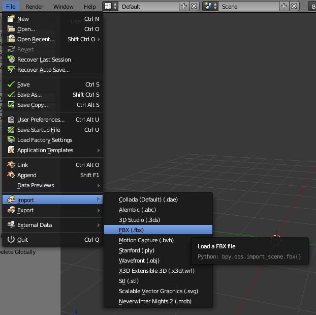
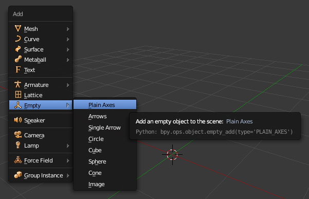
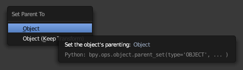

Tutorial: Animated placeable
In this tutorial we are going to take the banner of Tyr, which is a placeable included in NWN2, and make it animated using MDK and Blender.
Note: Similar instructions should be applicable to another computer graphics program like 3ds Max or Maya. The key about MDK is that it works with FBX, so it interoperates with any application that supports FBX.
Step 1: Convert the MDB to FBX
- Extract PLC_MC_TyrBanner.MDB from Data\NWN2_Models.zip located in the NWN2 install directory.
- Drag and drop the MDB onto nw2fbx-dragdrop.cmd. This should give PLC_MC_TyrBanner.fbx and automatically extract the textures used by the models (PLC_MC_TyrBanner.dds and PLC_MC_TyrBanner_N.dds).
Step 2: Import the FBX into Blender
- Open Blender.
-
Go to File > Import > FBX (.fbx)

- For importing NWN2 models, the default import options should be fine.
- Navigate to the directory where PLC_MC_TyrBanner.fbx is located and double-click it.
Step 3: Make animation pivot
MDK expects animations to be in local space (relative to a parent object) to avoid problems with global transforms that may occur when importing/exporting FBX. In order to do that, we must animated the model relative to a parent object which the MDK calls the animation pivot.
- Move the mouse cursor to the 3D view.
-
Press SHIFT+A and go to Empty > Plain Axes.

-
Look at the Outliner area to see the current scene objects:

We must name the empty object as the model we want to animate and append “.PIVOT” to the end.

-
Select the model by right-clicking it, now right-click the pivot while you press the SHIFT key so you add it to the selection, press CTRL+P and select Object.

Step 4: Animate the model
Now animate the model (not the pivot!) as you wish.
Step 5: Export to FBX
-
Go to File > Export > FBX (.fbx)

-
In the Animation tab, check Baked Animation and uncheck the other options.

-
Navigate to the directory where you want to export, double-click the file you want to overwrite or type a file name and click Export FBX. In this tutorial, we use the file tutorial.fbx.
Step 6: Convert FBX to NWN2
- Drag and drop tutorial.fbx onto fbx2nw-dragdrop.cmd. This should generate tutorial.MDB, tutorial.skel.gr2 and tutorial.anim.gr2.
- Ignore the generated MDB: in order to animate an existing MDB, we don’t need to modify it at all.
- Rename tutorial.skel.gr2 to PLC_MC_TyrBanner.gr2.
- Rename tutorial.anim.gr2 to PLC_MC_TyrBanner_idle.gr2.
Step 7: Edit placeables.2da
We have generated all the files we need, PLC_MC_TyrBanner.gr2 and PLC_MC_TyrBanner_idle.gr2, but now we must link the placeable to the skeleton. To do that, you must edit the file placeables.2da and modify the line of the placeable as follows:
- Column PlaceableModelType: set to 2.
- Column NWN2_Skeleton: set to PLC_MC_TyrBanner.
Final words
Video showing final result: https://youtu.be/tB5HyjDmG0A
This tutorial explains the simplest case for animating a placeable. Future tutorials may explain:
- Animated multipart placeables.
- Animated placeable with several states: idle, open, …